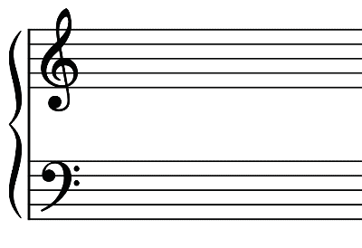

Chapter Two
Staff notation
The grand staff
The grand staff, also known as the great staff, is a musical notation system that combines treble and bass staffs. In the grand staff, the treble and bass staffs are joined by a vertical line at the beginning (left-hand side) while normally connected by a brace or bracket. The grand staff is used to notate music for instruments such as piano, harp and voice. Figure 2.1 shows a grand staff that is connected by a brace.

Brace